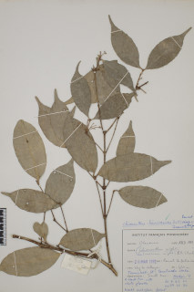

Images :


| Habit : | Trees up to 10 m tall. |
| Leaves : | Leaves simple , opposite , decussate ; petiole ca. 0.3 cm long, canaliculate , glabrous ; lamina 6-11.6 x 3.2-4 cm, elliptic , elliptic-oblong , apex caudate , base acute to attenuate , margin entire , glabrous , coriaceous , drying olive green; midrib slightly canaliculate ; secondary_nerves ca. 6 pairs, slender, looped ; tertiary_nerves broadly reticulate to obscure . |
| Inflorescence / Flower : | Inflorescence axillary panicles , up to 4 cm long; flowers white. |
| Fruit and Seed : | Drupe , 1.3 cm long, ovoid , smooth; seed one. |